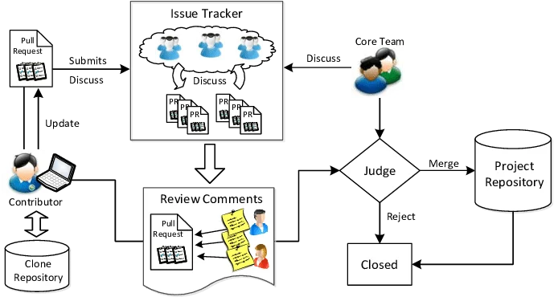
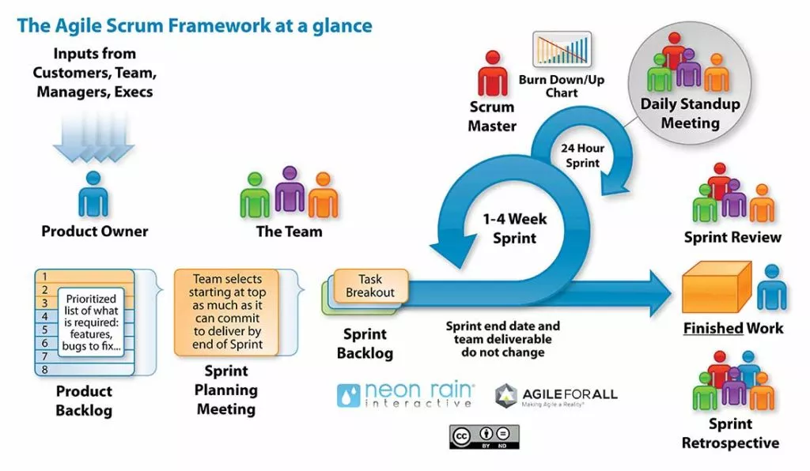

The Archive
Portfolio Abstract
This digital archive represents a exploration of writing within computer science. Through two major projects, supplemented with journal entries and reflection pieces, I examine Computer Science discourse communities. My work demonstrates a growing understanding of how writing functions as a tool for mediating activity, developing as a professional, and contributing to a discourse.
This archive documents the evolution of my thinking about writing. It is a foundation for continued growth as a writer, computer scientist, and communicator in academic and professional settings.
Project 1: Writing in My Discipline
Project 2: Discourse Community Analysis
Draft
Artifact Gallery
This is where my discussion of my other artifacts will go. My plan is to showcase my journal entries, and maybe some discussion board posts
Pull Request Analysis

Discussion
This is where I will discuss the pull requests image. I can analyze how pull requests function as artifacts of computer science discourse communities.
Scrum Methodology

Discussion
This is where I will discuss the scrum methodology image. This will help me describe what Scrum is, and what it does.
Journal Entry
Discussion
This is where I will embed and discuss relevant journal entries.
Reflective Statement
Revisions
This is where I will discuss the revisions made to my work.
Emerging Theory of Writing
This website as a multimodal stack
I would like to discuss how this website itself is a "multimodal stack." I would like to showcase the file structure and design choices of this website itself, and how even when working alone, writing in Computer Science requires multiple layers/modes of communication.